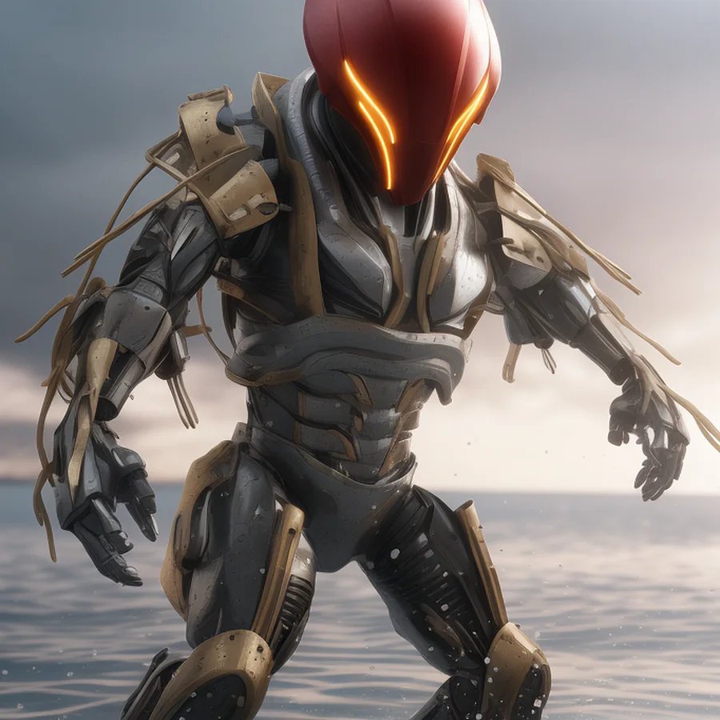
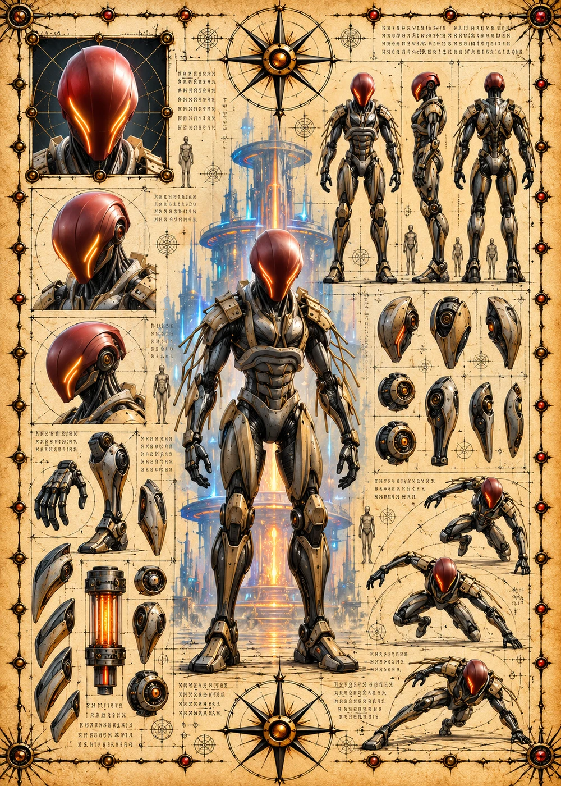

©
©
GENEZYS ARCHIVE · Earth 2 · Synthbot
Vortz
Eclipse Binder

Archive record
Vortz binds enemies with chains of dreadful fog. The Nocturne Chain pierces the enemies on the flanks while the darkness hides it. Every link Vortz forges is fed by the Nexus, and none of them has ever broken.
Combat signature
Nocturne Chain
140 Cosmara
210 Animus
280 Vitalis
Hollows dreadful fog under cover: Deals 80 pierce damage to enemies on the edges.
Genezys 08:06 ™&©2026LEGIONS
